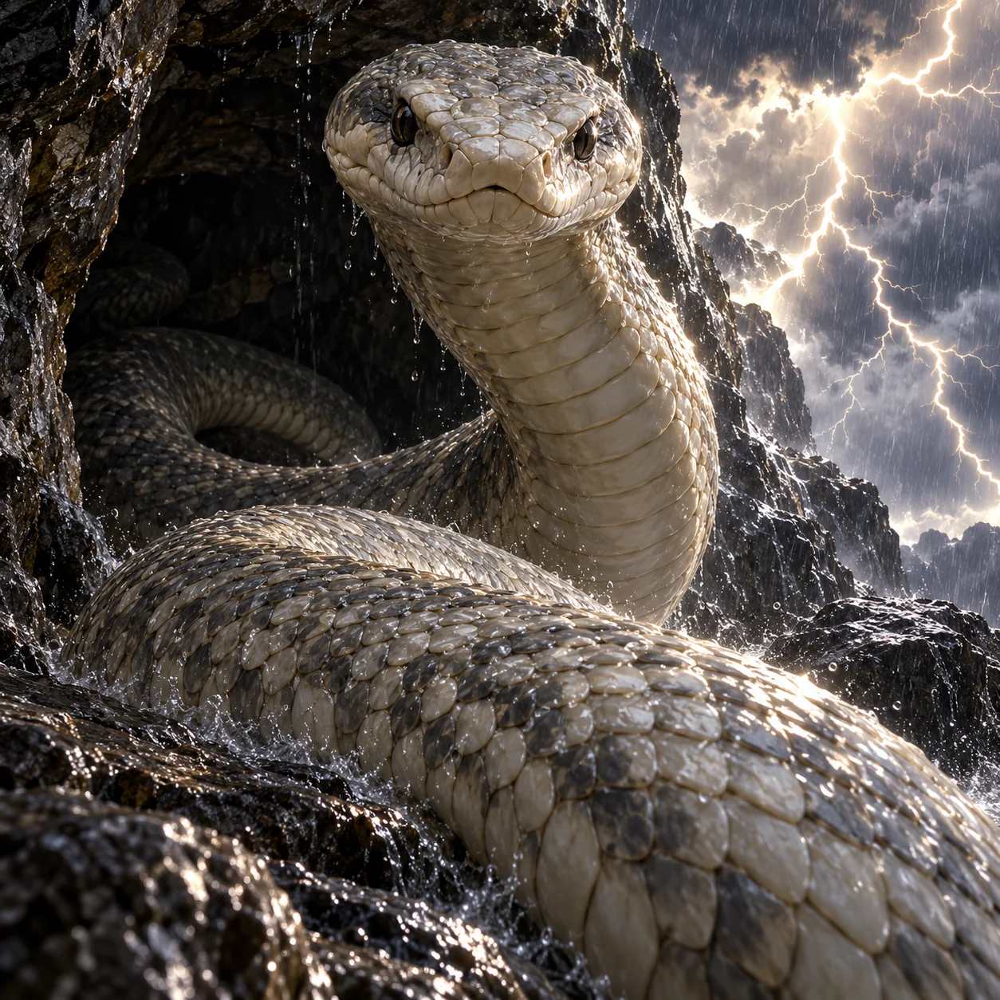

Ōmononushi

Sacred serpent kami uncoiling from a Mount Miwa rock cave under a thunder manifestation.
Aura: The serpent form c05/c08 emerging from the rock cave c05 amid physical thunder c07/c08 conveys divine awe, with no generic luminous envelope.
Audit ciri dan sumber
- [object Object]
- [object Object]
- [object Object]
Native 1254px and 200px inspected: one snake head with two natural eyes, one continuous limbless coiling serpent body emerging from dark rock cave (c05/c08), no added horns, crowns, mane or dragon anatomy. Raised neck and moving foreground coil through wet spray give active manifestation; forked physical lightning c07/c08 is background thunder, not body aura. Tight low framing makes sacred stern presence dominate at 200px without asserting giant size. Closed mouth, no evil fangs, plague, victims, symbols, text or borrowed design. All seven Sangar checks pass.
Review sumberONE original square premium PAINTERLY CINEMATIC Mitoloka illustration of Ōmononushi, revered kami of Mount Miwa in his documented SNAKE manifestation, emerging from his rock cave as thunder breaks. ANATOMY: ONE living sacred SERPENT, ONE natural snake head, TWO dark natural snake eyes, ONE long continuous limbless snake body in coils and ONE tapering tail. Smooth broad snake head with closed dignified mouth, natural belly scutes and fine ivory-grey dorsal scales. No horns, crown, crest, mane, beard, hair, wings, arms, legs, ornaments or human face. This is a snake god, NOT a dragon [omononushi-c05,c08]. MOMENT: UNCOIL forcefully from the dark stone cave and raise the foremost neck toward the very low viewer, broad head facing the viewer directly and inclined slightly down in solemn divine regard; nearest coil slides over wet rock into foreground, body flowing from one continuous neck through the cave coils with no duplicate snakes. No fangs, attack, snarl or evil expression. POWER: a hard real LIGHTNING FORK tears the storm sky just outside cave, lighting serpent scales and wet rock; physical thunder manifestation from c07/c08, no spell beams, magical corona, glowing eyes or electricity along body. Rain streams on stone and sprays from moving coil. SCALE & CAMERA: extremely LOW CLOSE camera just outside the rock cave; head and rising neck fill upper half, huge foreground coil by close perspective fills lower half, snake is unmistakable dominant subject. No giant-size claim: no miniature trees, buildings or people; cave edges close cropped so no scale comparison. LIGHT & WEATHER: ONE dominating white-gold LIGHTNING FLASH outside storm-lit cave, brilliant hard edges on pale scales with deep walnut-black shadows under coils, heavy physical rain outside, cave dark. SURFACE: wet overlapping irregular snake scales, broad belly scutes, slick ancient grey rock, rivulets and spray. SETTING: rock cave of Mount Miwa in Japan [c01,c05], no invented shrine inscriptions or religious iconography. MOOD: sacred awe before a powerful earthly kami, dignified and overwhelming, respectful, never monstrous evil snake or ordinary reptile wildlife portrait. The coiling emergence plus thunder must read as active divine manifestation at 200px. HARD CONSTRAINTS: no text, letters, logo, border, watermark; no extra heads, eyes, tails or limbs; no borrowed film/game/anime/comic designs, no nudity or gore, no victims or plague visuals; no generic aura, neon outlines, runes, energy ribbons or glowing mist. Rich tactile painterly brushwork, square composition.